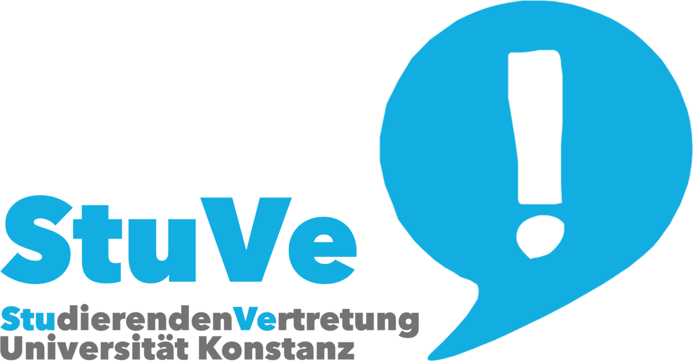

Sponsoren 2019/20
- Vielen Dank an die Studierendenvertretung der Uni Konstanz für Ihre Unterstützung in Höhe von 400€ im Wintersemester für unsere Einsteigerabende und die Teilnahme an einem Einsteigerturnier!
- Danke an die Uni Konstanz für die kostenlose Bereitstellung ihrer Räumlichkeiten und Werbeflächen!
- Wenn Sie Interesse haben, unser Sponsor zu werden, freuen wir uns sehr über Ihre Nachricht an mail@koko.team! Wir freuen uns immer über Unterstützung in jeder Höhe für Reisekosten, Turnierbeiträge und Einsteigerabende.
